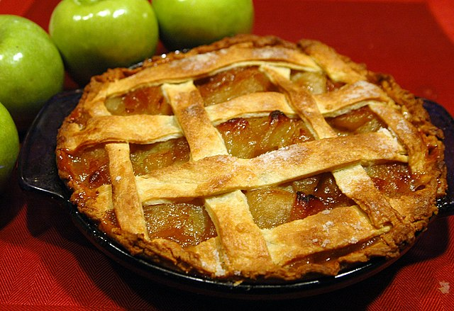

Apple Pie

Description
An apple pie is a fruit pie in which the principal filling ingredient is apples. Apple pie is often served with whipped cream, ice cream ("apple pie à la mode"), custard or cheddar cheese.
It is generally double-crusted, with pastry both above and below the filling; the upper crust may be solid or latticed (woven of crosswise strips). The bottom crust may be baked separately ("blind") to prevent it from getting soggy. Deep-dish apple pie often has a top crust only. Tarte Tatin is baked with the crust on top, but served with it on the bottom.
Apple pie is an unofficial symbol of the United States and one of its signature comfort foods.
Ingredients
- Dough for double-crust pie
- 1/3 cup sugar
- 1/3 cup packed brown sugar
- 1/4 cup all-purpose flour
- 1 teaspoon ground cinnamon
- 1/4 teaspoon ground ginger
- 1/4 teaspoon ground nutmeg
- 6 to 7 cups thinly sliced peeled tart apples
- 1 tablespoon lemon juice
- 1 tablespoon butter
- 1 large egg white
- Optional: Turbinado or coarse sugar, ground cinnamon, vanilla bean ice cream and caramel sauce
Steps
- Preheat oven to 375°. On a lightly floured surface, roll half the dough to a 1/8-in.-thick circle; transfer to a 9-in. pie plate. Chill while preparing filling. In a small bowl, combine sugars, flour and spices. In a large bowl, toss apples with lemon juice. Add sugar mixture; toss to coat. Add filling to crust; dot with butter.
- Roll remaining dough to a 1/8-in.-thick circle. Place over filling. Trim, seal and flute edge. Cut slits in top. Beat egg white until foamy; brush over crust. If desired, sprinkle with turbinado sugar and ground cinnamon.
- Bake on the lowest rack 60-70 minutes, until crust is golden brown and filling is bubbly, covering with foil halfway if crust begins to get too dark. Cool on a wire rack. If desired, serve with ice cream and caramel sauce.